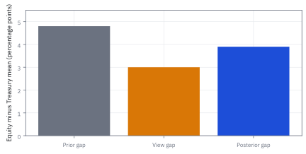
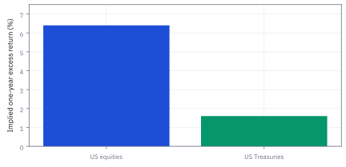

17.9 The Black-Litterman Model
ถ้าจุดตั้งต้นคาดว่าหุ้นชนะพันธบัตร 4.8 จุดต่อปี แต่ทีมวิจัยคาดเพียง 3 จุด ความเห็นใหม่นี้ทำให้เราลดหุ้น ไม่ใช่เพิ่ม เริ่มจากการผสมสองตัวเลขนี้ก่อน แล้วค่อยหาน้ำหนักพอร์ต
พอร์ตอ้างอิงถือหุ้น 60% พันธบัตร 40% ทุน \$10 ล้าน ทีมวิจัยบอกว่า “หุ้นจะชนะพันธบัตร 3 จุดต่อปี” แต่ไม่มั่นใจเต็มร้อย ผู้จัดการคนหนึ่งจะเพิ่มหุ้นทันทีเพราะมุมมองบอกว่าหุ้นดีกว่า ควรเพิ่มหรือลดหุ้น และเท่าไร?
ลองตอบก่อนเปิดเฉลย
ภายใต้ค่าความเสี่ยงและความไม่แน่นอนที่โจทย์กำหนด จะลดหุ้นเหลือ 51.43% ย้าย \$857,143 ไปพันธบัตร จุดตั้งต้นของแบบจำลองให้ส่วนต่าง 4.8 จุด มุมมอง 3 จุดจึงต่ำกว่าจุดตั้งต้น เมื่อให้น้ำหนักสองฝั่งเท่ากันจะได้ 3.9 จุด ตัวเลข 4.8 ไม่ได้อ่านจากราคาโดยตรง แต่คำนวณจากน้ำหนักอ้างอิงและสมมติฐานในขั้นที่ 1
เริ่มจากส่วนต่างสองตัวเลข ไม่ใช่ matrix
จุดตั้งต้นของตัวอย่างให้ผลตอบแทนคาดหวังเหนือเงินสดของหุ้น 6.4% และพันธบัตร 1.6% ต่อปี หักกันได้ $6.4-1.6=4.8$ จุดเปอร์เซ็นต์ ทีมวิจัยเสนอส่วนต่างใหม่ 3.0 จุด ไม่ได้บอกว่าผลตอบแทนหุ้นทั้งตัวเท่ากับ 3.0%
| ข้อมูลที่นำมาผสม | หุ้นลบพันธบัตร (จุดเปอร์เซ็นต์ต่อปี) |
|---|---|
| จุดตั้งต้นของแบบจำลอง | 4.8 |
| มุมมองของทีมวิจัย | 3.0 |
| ค่าหลังผสม เมื่อให้น้ำหนักเท่ากัน | 3.9 |
โจทย์กำหนดให้ความไม่แน่นอนของสองฝั่งมี variance เท่ากัน จึงให้น้ำหนักฝ่ายละครึ่ง คิดได้ทันทีโดยยังไม่ต้องใช้ matrix:
ส่วนต่างยังเป็นบวก แต่ลดลงจากเดิม 0.9 จุด นี่จึงเป็นเหตุให้ลดหุ้นจากพอร์ตอ้างอิงในแบบจำลองนี้ ถ้ามุมมองไม่แน่นอนกว่าจุดตั้งต้นมาก ค่าหลังผสมจะขยับน้อยลงและอยู่ใกล้ 4.8 มากกว่า 3.9
ต่อไปจะเรียกจุดตั้งต้นว่า prior มุมมองใหม่ว่า view และค่าหลังผสมว่า posterior ขั้นที่ 1–4 แสดงที่มาของตัวเลขเหล่านี้ ส่วนขั้นที่ 5 ใช้แบบจำลองความเสี่ยงแปลงเป็นน้ำหนักพอร์ต
Figure 17.9b — ส่วนต่างลดจาก 4.8 เป็น 3.9 จุด

แกนตั้งเป็นจุดเปอร์เซ็นต์ต่อปี แท่งหลังผสมอยู่กึ่งกลางเพราะตัวอย่างนี้ให้ความไม่แน่นอนสองฝั่งเท่ากัน ไม่ใช่เพราะ Black-Litterman ต้องเฉลี่ยครึ่งหนึ่งเสมอ
สิ่งที่เราจะสร้าง
17.8 แสดงว่าน้ำหนักพอร์ตไวต่อความคลาดของค่าเฉลี่ยที่ประมาณมา Fischer Black กับ Robert Litterman เสนอให้กลับด้านคำถาม: เริ่มจากน้ำหนักอ้างอิง ถามว่าค่าเฉลี่ยแบบไหนทำให้น้ำหนักนี้ดีที่สุดภายใต้แบบจำลองความเสี่ยงที่เลือก แล้วใส่เฉพาะมุมมองที่มีพร้อมความไม่แน่นอนของมัน
เริ่มจากย้อนหาค่าเฉลี่ยจากน้ำหนัก 60/40 ด้วยเงื่อนไขอันดับหนึ่งของ 12.5 อ่านมุมมองเทียบกับค่านั้น เขียนความไม่แน่นอนสองฝั่งเป็น Normal แล้วใช้สูตรค่าเฉลี่ยแบบมีเงื่อนไขของ 8.7 ผสม แปลงเป็นน้ำหนัก ดูปุ่มความมั่นใจ และจบที่กับดักของการนับมุมมองเดียวกันสองครั้ง
ศัพท์ที่ใช้ในหัวข้อนี้
- Reverse optimization
- การย้อนหาค่าเฉลี่ยที่ทำให้น้ำหนักอ้างอิงเป็นคำตอบของ mean-variance ภายใต้ covariance และค่าความเกลียดความเสี่ยงที่เลือก ไม่ต้องใช้ค่าเฉลี่ยย้อนหลังโดยตรง แต่ยังต้องกำหนดสมมติฐานเหล่านี้
- Prior
- ความเชื่อก่อนใส่มุมมอง ในหน้านี้คือค่าเฉลี่ยที่ย้อนได้จากน้ำหนักอ้างอิง พร้อมความไม่แน่นอนของมัน
- View (มุมมอง)
- ข้อความเกี่ยวกับค่าเฉลี่ยของสินทรัพย์ตัวเดียว หรือส่วนต่างของหลายตัว พร้อมตัวเลขความไม่มั่นใจ ใช้ใส่ความเห็นโดยไม่ต้องเดาค่าเฉลี่ยทุกตัว
- Posterior
- ความเชื่อหลังผสมมุมมองแล้ว เป็นค่าเฉลี่ยที่ถ่วงแต่ละฝั่งด้วยความแม่น (Bayes ของ 1.7) ใช้คำนวณน้ำหนักสุดท้าย
- Risk aversion $\delta$
- พารามิเตอร์ที่กำหนดว่าต้องการผลตอบแทนเพิ่มเท่าไรเพื่อชดเชย variance ที่สูงขึ้น ตัวอย่างนี้เลือก 2.5 ไม่ใช่ค่าที่น้ำหนัก 60/40 บอกได้เอง
- Active tilt
- ส่วนที่น้ำหนักสุดท้ายต่างจากน้ำหนักอ้างอิง Black-Litterman ทำให้มันเกิดเฉพาะในทิศของมุมมอง
สัญลักษณ์และหน่วย
| สัญลักษณ์ | ความหมาย | หน่วย |
|---|---|---|
| $\Sigma$ | covariance ของผลตอบแทนรายปี | สัดส่วนกำลังสอง |
| $w_m$ | น้ำหนักอ้างอิง (60/40) | สัดส่วน |
| $\delta$ | risk aversion | ต่อสัดส่วน |
| $\Pi$ | ผลตอบแทนส่วนเกินที่น้ำหนักอ้างอิงบอกเป็นนัย | ต่อปี |
| $\mu$ | ผลตอบแทนส่วนเกินคาดหวังจริงที่ไม่รู้ | ต่อปี |
| $\tau$ | ตัวคูณความไม่แน่นอนของ prior | ไม่มีหน่วย |
| $P$ | matrix ที่บอกว่ามุมมองแต่ละข้อพูดถึงสินทรัพย์ไหน | ไม่มีหน่วย |
| $q$ | ตัวเลขที่มุมมองอ้าง | ต่อปี |
| $\Omega$ | covariance ของความคลาดของมุมมอง | สัดส่วนกำลังสอง |
| $\mu_{\text{post}}$ | ค่าเฉลี่ยหลังผสม | ต่อปี |
| $M$ | ความไม่แน่นอนของค่าเฉลี่ยที่เหลือหลังผสม | สัดส่วนกำลังสอง |
| $w^*$ | น้ำหนักสุดท้าย | สัดส่วน |
ขั้นที่ 1 — ย้อนจากน้ำหนักไปหาค่าเฉลี่ย
หุ้นมีความผันผวน 20% พันธบัตร 10% correlation 0.2 ทุกผลตอบแทนเป็นส่วนเกินเงินสด นักลงทุนแบบ 12.5 ทำ $U(w)$ ข้างล่างให้สูงสุด ปกติเรารู้ค่าเฉลี่ยแล้วหาน้ำหนัก ครั้งนี้กลับด้าน: รู้น้ำหนัก 60/40 แล้วหาค่าเฉลี่ยที่ทำให้มันดีที่สุด $\delta=2.5$ เป็นค่าที่เลือก
ในปัญหาที่ไม่มีข้อจำกัดน้ำหนัก ถ้ากำหนดให้ $w_m$ เป็นจุดที่ดีที่สุด ความชันต้องเป็นศูนย์ จึงได้ $\Pi=\delta\Sigma w_m$ เมื่อใช้ covariance และ $\delta=2.5$ ตามโจทย์ จะได้ผลตอบแทนส่วนเกินหุ้น 6.4% พันธบัตร 1.6% ต่อปี ส่วนต่าง 4.8 จุด นี่คือจุดตั้งต้นภายใต้สมมติฐานที่เลือก ไม่ใช่ผลที่น้ำหนัก 60/40 หรือราคาตลาดยืนยันได้โดยลำพัง
คูณ $w_m^{\mathsf T}$ ทั้งสองข้าง: $w_m^{\mathsf T}\Pi=0.0448$ และ $w_m^{\mathsf T}\Sigma w_m=0.01792$ คือพอร์ตอ้างอิงได้ส่วนเกิน 4.48% ที่ความผันผวน 13.39% (Sharpe 0.335) $\delta$ จึงเท่ากับส่วนเกินหารด้วย variance ของพอร์ตอ้างอิง เปลี่ยน $\delta$ ค่าเฉลี่ยทั้งชุดก็เปลี่ยนตามสัดส่วน
Figure 17.9a — ผลตอบแทนที่ย้อนมาจากจุดอ้างอิง

แกนตั้งคือผลตอบแทนส่วนเกินหนึ่งปีที่บอกเป็นนัย หุ้น 6.4% พันธบัตร 1.6% ถ้าใช้สองตัวเลขนี้กับ $\Sigma$ และ $\delta=2.5$ เดิม mean-variance ให้น้ำหนัก 60/40 กลับมาพอดี เปลี่ยน $\Sigma$ หรือ $\delta$ แท่งทั้งสองก็เปลี่ยน
ขั้นที่ 2 — เขียนมุมมองและความไม่แน่นอนของสองฝั่ง
มุมมอง “หุ้นชนะพันธบัตร 3 จุด” พูดถึงส่วนต่าง จึงเขียนด้วย $P=[1,\ -1]$ และ $q=0.03$ ก่อนผสม ต้องบอกว่าเชื่อแต่ละฝั่งแค่ไหน prior บอกว่าค่าเฉลี่ยจริงอยู่รอบ $\Pi$ ด้วยความไม่แน่นอน $\tau\Sigma$ (ใช้ $\tau=0.05$ ซึ่งเป็นค่าที่นิยม) มุมมองมีความคลาด $\epsilon$ ที่มี variance $\Omega$ (นิยามของแบบจำลอง)
คูณด้วย $P^{\mathsf T}=(1,-1)$ คือคอลัมน์แรกลบคอลัมน์ที่สอง $P\tau\Sigma P^{\mathsf T}=0.0021$ คือ variance ของความไม่แน่นอนในส่วนต่างตาม prior ตั้ง $\Omega$ เท่ากันพอดี จึงให้น้ำหนักข้อมูลสองฝั่งเท่ากัน ตัวเลขนี้ไม่ใช่โอกาสที่ทีมวิจัยจะทายถูก
prior บอก 4.8 จุด แต่มุมมองบอก 3 จุด จึงต่ำกว่าจุดตั้งต้น 1.8 จุด แม้ยังคาดว่าหุ้นให้ผลตอบแทนสูงกว่าพันธบัตรก็ตาม
ขั้นที่ 3 — ผสมด้วยค่าเฉลี่ยแบบมีเงื่อนไขของ Normal
ถ้า $\mu$ กับ $q$ เป็น Normal ร่วมกัน ค่าเฉลี่ยของ $\mu$ เมื่อรู้ $q$ คือสูตรเดียวกับ hedge ratio ของ 8.7: ค่าเฉลี่ยเดิม บวก covariance คูณ inverse ของ variance คูณความประหลาดใจ ต้องหาสามก้อนก่อน โดยใช้ว่า $\epsilon$ อิสระจาก $\mu$
อ่านจากขวาไปซ้าย: $(q-P\Pi)$ คือความประหลาดใจ ถ้ามุมมองตรงกับจุดตั้งต้น ก้อนนี้เป็นศูนย์และไม่มีอะไรขยับ ก้อนกลางคือการชั่งความเชื่อ ถ้า $\Omega$ โตมาก ก้อนนี้เข้าหาศูนย์และคำตอบกลับไปที่ $\Pi$ ก้อนซ้ายแปลงผลกลับเป็นภาษาของสินทรัพย์ทุกตัว
matrix ที่ต้องกลับมีขนาดเท่าจำนวนมุมมอง ไม่ใช่จำนวนสินทรัพย์ มุมมองมักมีไม่กี่ข้อ นี่คือเหตุที่สูตรนี้ใช้ได้กับพอร์ตหลายร้อยตัว
ขั้นที่ 4 — ค่าเฉลี่ยหลังผสม
โจทย์ให้อะไรมาบ้าง: ก้อนต่าง ๆ ของขั้นที่ 2 แทนลงในสูตรของขั้นที่ 3 ตัว inverse เป็นตัวเลขเดียว $1/0.0042$
คำตอบ: หุ้น 5.6286% พันธบัตร 1.7286% ส่วนต่าง 3.9 จุด ทั้งสองตัวขยับทั้งที่มุมมองพูดถึงแค่ส่วนต่าง เพราะ covariance เชื่อมสองตัว หุ้นซึ่งแกว่งมากกว่ารับการปรับส่วนใหญ่ (−0.77 จุด เทียบ +0.13 จุด)
บรรทัดสุดท้ายคือการอ่านแบบ Bayes (1.7): ส่วนต่างหลังผสมคือค่าเฉลี่ยของ 4.8 กับ 3.0 ถ่วงด้วยความแม่น เมื่อ variance ของสองฝั่งเท่ากัน น้ำหนักของมุมมองคือครึ่งหนึ่งพอดี ถ้า $\Omega$ ใหญ่กว่านี้สิบเท่า น้ำหนักเหลือ $1/11=0.09$ และส่วนต่างขยับแค่ 0.16 จุด
ตรวจเองใน 10 วินาที: $0.056286-0.017286=0.039$ และ $4.8-0.9=3.9$
ขั้นที่ 5 — จากค่าเฉลี่ยเป็นน้ำหนัก: จุดอ้างอิงบวก tilt
แปลงค่าเฉลี่ยกลับเป็นน้ำหนักด้วยสูตรเดียวกับขั้นที่ 1 $w^*=\Sigma^{-1}\mu_{\text{post}}/\delta$ กลับ $\Sigma$ ด้วยสูตร 2×2 ($\det\Sigma=0.0004-0.000016=0.000384$) แล้วดูว่าน้ำหนักแยกเป็นสองส่วนอย่างไร
$h$ คือตัวคูณ −4.285714 ของขั้นที่ 4 จังหวะสำคัญคือ $\Sigma^{-1}\Pi/\delta=w_m$ (ขั้นที่ 1) และ $\Sigma^{-1}\tau\Sigma=\tau I$ ตัดกันเหลือแค่ $P^{\mathsf T}$ น้ำหนักสุดท้ายจึงเป็นจุดอ้างอิงบวก tilt ในทิศของมุมมองเท่านั้น ไม่มีทิศที่สามให้ optimizer เอาไปขยายความคลาดแบบ 17.8
มุมมองเป็นส่วนต่าง $P^{\mathsf T}=(1,-1)$ tilt จึงรวมเป็นศูนย์ ทุนยังเต็ม 100% หุ้นเหลือ \$5,142,857 พันธบัตร \$4,857,143 ย้าย \$857,143
Figure 17.9c — จาก prior ผ่าน view ไปยังน้ำหนัก

แท่งซ้อน ล่างคือหุ้น บนคือพันธบัตร: prior 60/40 แท่งกลางคือขีดจำกัดเมื่อ $\Omega\to0$ (เชื่อมุมมองเต็มที่ ส่วนต่างถูกบังคับเป็น 3 จุดพอดี) ได้หุ้น 42.86% แท่งขวาคือหลังผสม 51.43% ซึ่งอยู่ระหว่างสองแท่งแรก แท่งกลางไม่ใช่น้ำหนักที่มุมมองระบุได้ลำพัง เพราะส่วนอื่นของ prior ยังอยู่
ขั้นที่ 6 — ปุ่มความมั่นใจ
ตัวเลขที่ยากที่สุดในทางปฏิบัติคือ $\Omega$ ลองตั้ง $\Omega=k\,P\tau\Sigma P^{\mathsf T}$ แล้วดูว่าน้ำหนักหุ้นเปลี่ยนตาม $k$ อย่างไร แทนลงในขั้นที่ 5 ตัวส่วน $0.0021+k(0.0021)=0.0021(1+k)$
ไม่มั่นใจ ($k$ ใหญ่) น้ำหนักกลับหา 60% เอง มั่นใจมาก ($k\to0$) น้ำหนักเข้าหา $0.6-0.171429=42.86\%$ ของ Figure 17.9c พฤติกรรมนี้คือสิ่งที่ต้องการ: พอร์ตเบนจากจุดอ้างอิงเท่าที่ความมั่นใจรองรับ แต่ก็แปลว่าผลลัพธ์ไวต่อตัวเลขที่คนใส่เอง ซึ่งคนมักประเมินความมั่นใจของตัวเองสูงเกิน
Figure 17.9d — ความไม่แน่นอนมากทำให้กลับหาจุดอ้างอิง

แกนนอนเป็น log ของ $k$ จาก 0.01 ถึง 100 (100 จุด) แกนตั้งคือน้ำหนักหุ้น เส้นประคือ 60% เส้นขึ้นจากราว 43% ทางซ้ายไปแตะ 60% ทางขวา ตามสูตร $0.6-0.171429/(1+k)$ เส้นนี้แสดงความไวต่อความมั่นใจที่ใส่ ไม่ใช่โอกาสที่มุมมองจะถูก
ขั้นที่ 7 — มุมมองเดียวกันสองครั้งไม่ใช่หลักฐานสองชิ้น
สมมติสองทีมส่งมุมมองเดียวกัน “หุ้นชนะพันธบัตร 3 จุด” แต่ทั้งสองทีมอ่านรายงานชุดเดียวกัน ถ้าใส่เป็นสองบรรทัดโดยให้ความคลาดอิสระกัน สูตรจะนับเป็นหลักฐานสองชิ้น ลองเทียบกับกรณีที่ความคลาดของสองบรรทัดมี correlation 0.9 ใช้ $P$ สองแถวเหมือนกันและ $\Omega$ ขนาด 2×2
แทนลงในขั้นที่ 3: ก้อนกลางเป็น $0.0021\begin{bmatrix}2&1+\rho\\1+\rho&2\end{bmatrix}$ ผลรวมของตัวคูณสองตัวคือ $2(-0.018)/(0.0021(3+\rho))$ ส่วนต่างจึงขยับ $1.8\times2/(3+\rho)$ จุด ความคลาดอิสระ ($\rho=0$) ขยับ 1.2 จุด เหมือนมุมมองที่มั่นใจขึ้นเท่าตัว ความคลาดที่ correlation 0.9 ขยับ 0.92 จุด ใกล้กับมุมมองข้อเดียว (0.9 จุด)
ช่องนอกแนวทแยงของ $\Omega$ จึงเป็นข้อมูลทางเศรษฐกิจว่ามุมมองมาจากแหล่งเดียวกันไหม ไม่ใช่รายละเอียดตกแต่ง
Figure 17.9e — มุมมองซ้ำไม่ควรถูกนับเป็นพยานอิสระ

แท่งแดงคือความคลาดของสองบรรทัดอิสระกัน ส่วนต่างหลังผสม 3.60 จุด แท่งน้ำเงินคือ correlation 0.9 ได้ 3.88 จุด เส้นประคือ prior 4.8 จุด ตามขั้นที่ 7
ขั้นที่ 8 — ความไม่แน่นอนที่เหลือในค่าเฉลี่ย
นอกจากค่าเฉลี่ย สูตรเดียวกันของ 8.7 ให้ variance แบบมีเงื่อนไข: variance เดิมลบส่วนที่มุมมองอธิบายได้ ใช้ดูว่ามุมมองลดความไม่รู้ไปแค่ไหน
แนวทแยงลดลง (หุ้นจาก 0.0020 เป็น 0.001229) เพราะมุมมองให้ข้อมูลเพิ่ม covariance นอกแนวทแยงเพิ่มขึ้นในตัวอย่างนี้ เพราะข้อมูลเกี่ยวกับส่วนต่างผูกค่าเฉลี่ยสองตัวเข้าด้วยกัน
ถ้าให้ผลตอบแทนปีหน้าเท่ากับค่าเฉลี่ยที่ยังไม่รู้ บวกช็อกอิสระที่มี covariance $\Sigma$ ความไม่แน่นอนรวมของผลตอบแทนจะเป็น $\Sigma+M$ แต่การคำนวณน้ำหนักในหน้านี้ใช้ค่าเฉลี่ยหลังผสมกับ $\Sigma$ เดิม ต้องแยกสองวิธีนี้ เพราะอาจให้น้ำหนักต่างกัน
คำถามที่ควรถามออกมาดัง ๆ
ทำไมเริ่มจากน้ำหนักอ้างอิง? เราต้องการให้กรณีไม่มีมุมมองกลับมาที่พอร์ตอ้างอิงพอดี ไม่ใช่ให้น้ำหนักไล่ตามความคลาดของค่าเฉลี่ยย้อนหลัง อย่างไรก็ตาม พอร์ตอ้างอิงยังเป็นสิ่งที่เราเลือก และ Black-Litterman ไม่ได้ห้าม short หรือ leverage โดยอัตโนมัติ ถ้าต้องการข้อจำกัดเหล่านี้ต้องใส่ในปัญหาเลือกน้ำหนักเพิ่ม
มุมมองแบบค่าเดียว (absolute) ต่างจากส่วนต่างอย่างไร? มุมมอง “พันธบัตรได้ 2.5%” ใช้ $P=[0,1]$ tilt จึงอยู่ที่พันธบัตรตัวเดียว ไม่รวมเป็นศูนย์ พอร์ตใช้ทุนเกินหรือต่ำกว่า 100% (โจทย์ข้อ 3)
$\tau$ ควรเป็นเท่าไร? ตัวอย่างนี้เลือก 0.05 ไม่ใช่ค่าที่รับรองว่าเหมาะกับทุกตลาด เมื่อผูก $\Omega=kP\tau\Sigma P^{\mathsf T}$ ค่า $\tau$ จะตัดกันในสูตรค่าเฉลี่ยหลังผสม จึงเหลืออัตราส่วน $k$ ที่กำหนดการปรับน้ำหนักเมื่อใช้ $\Sigma$ เดิม แต่ covariance ของค่าเฉลี่ย $M$ ยังขึ้นกับ $\tau$
ความผิดที่ให้คำตอบผิดแบบเงียบ ๆ
เทียบมุมมองกับศูนย์: “หุ้นดีกว่า 3 จุด” ยังต่ำกว่าจุดตั้งต้น 4.8 จุด จึงลดน้ำหนักหุ้นในตัวอย่างนี้ ต้องเทียบกับจุดตั้งต้นของแบบจำลอง ไม่ใช่ดูเพียงว่ามุมมองเป็นบวกหรือไม่
นับมุมมองซ้ำ: สองทีมที่ใช้ข้อมูลเดียวกันใส่เป็นสองบรรทัดอิสระ ส่วนต่างขยับ 1.2 จุดแทน 0.9 เหมือนมั่นใจขึ้นเท่าตัวโดยไม่มีหลักฐานใหม่
เชื่อ $\Omega$ ที่ใส่เอง: ความมั่นใจเป็นตัวเลขที่เดาทั้งหมด และน้ำหนักไวต่อมันตั้งแต่ 42.86% ถึง 60% ต้องลองหลายค่าแล้วรายงานช่วง
แยกความไม่แน่นอนแต่ละชนิด: $\Sigma$ อธิบายการแกว่งร่วมกันของผลตอบแทนรอบค่าเฉลี่ย ส่วน $\tau\Sigma$ และ $M$ อธิบายความไม่แน่นอนของค่าเฉลี่ยก่อนและหลังรับมุมมอง และ $\Omega$ อธิบายความคลาดของมุมมอง อย่าสลับบทบาทของตัวเลขเหล่านี้ในสูตรน้ำหนัก
ใช้ทำอะไรบนโต๊ะจริง
ผู้จัดการกองทุนหลายสินทรัพย์ใช้ Black-Litterman แปลงมุมมองของทีมวิจัยเป็นน้ำหนัก โดยเริ่มจาก benchmark ของกองทุน คณะกรรมการลงทุนอ่านได้ทีละบรรทัดว่าพอร์ตเบนจาก benchmark เพราะมุมมองข้อไหน ด้วยความมั่นใจเท่าไร น้ำหนักที่ได้ยังต้องผ่านเพดาน turnover ต้นทุนการซื้อขาย และเวลาส่งคำสั่ง (บทที่ 18) ก่อนกลายเป็นกำไรขาดทุนจริง
สามโจทย์ตรวจความเข้าใจ
1. ถ้ามุมมองคือหุ้นชนะพันธบัตร 6 จุด ($\Omega$ เท่าเดิม) ส่วนต่างหลังผสมและน้ำหนักหุ้นเป็นเท่าไร?
เฉลย
$q-P\Pi=0.012$ ตัวคูณ $0.012/0.0042=2.857$ ส่วนต่าง $4.8+1.2(0.5)=5.4$ จุด น้ำหนักหุ้น $0.6+0.02(2.857)=65.71\%$ มุมมองที่สูงกว่าจุดตั้งต้นจึงเพิ่มหุ้นในตัวอย่างนี้
2. มุมมอง 3 จุดเดิม แต่ความไม่มั่นใจเป็นสามเท่า ($k=3$) ได้อะไร?
เฉลย
น้ำหนักของมุมมอง $1/(1+3)=0.25$ ส่วนต่าง $4.8-1.8(0.25)=4.35$ จุด น้ำหนักหุ้น $0.6-0.171429/4=55.71\%$
3. มุมมองแบบค่าเดียว: พันธบัตรได้ส่วนเกิน 2.5% ด้วย $\Omega=\tau\Sigma_{22}=0.0005$ หาค่าเฉลี่ยหลังผสมและน้ำหนัก
เฉลย
$P=[0,1]$ $P\tau\Sigma P^{\mathsf T}=0.0005$ ความประหลาดใจ $0.025-0.016=0.009$ ตัวคูณ $0.009/0.001=9$ $\tau\Sigma P^{\mathsf T}=(0.0002,\ 0.0005)$ ค่าเฉลี่ยใหม่ $(0.0658,\ 0.0205)$ น้ำหนัก $w_m+0.02(9)(0,1)=(0.60,\ 0.58)$ รวม 118% คือกู้เงินสดมา 18% เพราะมุมมองค่าเดียวไม่ใช่ส่วนต่าง tilt จึงไม่หักล้างกัน
คำนวณซ้ำด้วย JavaScript
โค้ดนี้เขียน Black-Litterman แบบทั่วไปสำหรับมุมมองกี่ข้อก็ได้ ย้อนหาค่าเฉลี่ยจากน้ำหนัก ผสมด้วยค่าเฉลี่ยแบบมีเงื่อนไข แก้ระบบแทนการกลับ matrix คิดน้ำหนัก tilt และ $M$ แล้วลองปุ่มความมั่นใจ มุมมองซ้ำสองบรรทัด และโจทย์ท้ายหน้า พิมพ์ออกมาหนึ่งบรรทัด
function num(name, x) {
if (typeof x !== 'number' || !Number.isFinite(x)) throw new TypeError(`${name} must be a finite number`);
return x;
}
const dot = (a, b) => a.reduce((s, x, i) => s + x * b[i], 0);
const times = (M, v) => M.map(r => dot(r, v));
const T = M => M[0].map((_, j) => M.map(r => r[j]));
const mm = (A, B) => A.map(r => T(B).map(c => dot(r, c)));
function solve(S, b) { // Gaussian elimination with partial pivoting
const n = S.length, M = S.map((r, i) => [...r, b[i]]);
for (let c = 0; c < n; c++) {
let p = c;
for (let r = c + 1; r < n; r++) if (Math.abs(M[r][c]) > Math.abs(M[p][c])) p = r;
if (Math.abs(M[p][c]) < 1e-18) throw new RangeError('matrix is singular');
[M[c], M[p]] = [M[p], M[c]];
for (let r = c + 1; r < n; r++) { const f = M[r][c] / M[c][c]; for (let k = c; k <= n; k++) M[r][k] -= f * M[c][k]; }
}
const x = new Array(n).fill(0);
for (let r = n - 1; r >= 0; r--) x[r] = (M[r][n] - dot(M[r].slice(r + 1, n), x.slice(r + 1))) / M[r][r];
return x;
}
// Black-Litterman: prior mu ~ N(Pi, tau Sigma) with Pi = delta Sigma w_m; views q = P mu + e, e ~ N(0, Omega).
function blackLitterman({Sigma, wm, delta, tau, P, q, Omega}) {
if (!(num('tau', tau) > 0)) throw new RangeError('tau must be positive');
if (!(num('delta', delta) > 0)) throw new RangeError('delta must be positive');
if (P.length !== q.length || Omega.length !== q.length) throw new RangeError('P, q and Omega must describe the same number of views');
const Pi = times(Sigma, wm).map(x => delta * x);
const A = Sigma.map(r => r.map(x => tau * x)); // uncertainty of the mean
const AP = mm(A, T(P)); // tau Sigma P'
const inner = mm(P, AP).map((r, i) => r.map((x, j) => x + Omega[i][j])); // P tau Sigma P' + Omega
const surprise = q.map((v, i) => v - dot(P[i], Pi)); // q - P Pi
const h = solve(inner, surprise);
const post = Pi.map((v, i) => v + dot(AP[i], h));
const w = solve(Sigma.map(r => r.map(x => delta * x)), post);
const tilt = T(P).map(r => (tau / delta) * dot(r, h)); // w - w_m = (tau/delta) P' h
// Uncertainty left in the mean: M = A - A P' (inner)^-1 P A, one column at a time.
const PA = mm(P, A), cols = T(PA).map(c => solve(inner, c));
const M = A.map((r, i) => r.map((x, j) => x - dot(AP[i], cols[j])));
return {Pi, surprise, h, post, w, tilt, M};
}
const Sigma = [[0.04, 0.004], [0.004, 0.01]], wm = [0.6, 0.4], delta = 2.5, tau = 0.05;
const P = [[1, -1]], v = tau * (Sigma[0][0] - 2 * Sigma[0][1] + Sigma[1][1]); // P tau Sigma P' = 0.0021
const base = blackLitterman({Sigma, wm, delta, tau, P, q: [0.03], Omega: [[v]]});
const eqWeight = k => blackLitterman({Sigma, wm, delta, tau, P, q: [0.03], Omega: [[k * v]]}).w[0];
const det = Sigma[0][0] * Sigma[1][1] - Sigma[0][1] ** 2;
const twice = rho => { const r = blackLitterman({Sigma, wm, delta, tau, P: [[1, -1], [1, -1]], q: [0.03, 0.03], Omega: [[v, rho * v], [rho * v, v]]}); return r.post[0] - r.post[1]; };
const bull = blackLitterman({Sigma, wm, delta, tau, P, q: [0.06], Omega: [[v]]});
const bond = blackLitterman({Sigma, wm, delta, tau, P: [[0, 1]], q: [0.025], Omega: [[tau * Sigma[1][1]]]});
console.log(JSON.stringify({
Pi: base.Pi, marketVar: dot(wm, times(Sigma, wm)), marketExcess: dot(wm, base.Pi), v, surprise: base.surprise[0], h: base.h[0],
post: base.post, gap: base.post[0] - base.post[1], w: base.w, tilt: base.tilt, dollars: base.w.map(x => x * 1e7), M: base.M,
SigmaInv: [[Sigma[1][1] / det, -Sigma[0][1] / det], [-Sigma[0][1] / det, Sigma[0][0] / det]],
exactView: eqWeight(1e-12), dial: [0.1, 1, 3, 10, 100].map(eqWeight), twiceIndependent: twice(0), twiceCorrelated: twice(0.9),
bull: {gap: bull.post[0] - bull.post[1], w: bull.w}, bond: {post: bond.post, w: bond.w}
}));ที่มาที่ไป
Fischer Black กับ Robert Litterman พัฒนาวิธีนี้ที่ Goldman Sachs และตีพิมพ์ในปี 1990 ถึง 1992 เพราะ optimizer แบบเดิมให้น้ำหนักที่ไม่มีผู้จัดการคนไหนยอมใช้ วิธีเดิมบังคับให้ระบุค่าเฉลี่ยของทุกสินทรัพย์ ทั้งที่ทีมมีความเห็นจริงแค่ไม่กี่ข้อ พวกเขาเริ่มจากสิ่งที่ตลาดถืออยู่ แล้วปรับเฉพาะจุดที่มีความเห็นต่าง
ข้อจำกัด: วิธีนี้สมมติอะไร และของจริงเป็นอย่างไร
| สมมติอะไร | ของจริง | ผลเวลาใช้งาน |
|---|---|---|
| น้ำหนักอ้างอิงเป็นจุดตั้งต้นที่ดี | benchmark เป็นการเลือก ไม่เป็นกลางจริง | ความเป็นกลางสัมพันธ์กับ benchmark ที่เลือก |
| ระบุความมั่นใจเป็นตัวเลขได้ | คนประเมินความมั่นใจของตัวเองไม่ดี | น้ำหนักหุ้นขยับ 42.86% ถึง 60% ตาม $\Omega$ |
| ทุกอย่างเป็น Normal และ $\Sigma$ รู้แล้ว | หางหนา และ $\Sigma$ ก็ประมาณมา | ใช้ covariance ที่ผสมแล้วของ 17.8 และดู ES ของ 17.1 |
| ความคลาดของมุมมองอิสระกัน | มุมมองมาจากข้อมูลชุดเดียวกัน | ต้องใส่ช่องนอกแนวทแยงใน $\Omega$ |
สิ่งที่ควรตอบได้หลังอ่าน
- ย้อนค่าเฉลี่ยจากน้ำหนักด้วย $\Pi=\delta\Sigma w_m$: 60/40 บอกเป็นนัยว่าหุ้น 6.4% พันธบัตร 1.6%
- มุมมองต้องเทียบกับ $P\Pi$: “หุ้นชนะ 3 จุด” เทียบกับ 4.8 จุดคือมุมมองลบ
- ค่าเฉลี่ยหลังผสมคือสูตรค่าเฉลี่ยแบบมีเงื่อนไขของ 8.7: ส่วนต่าง 3.9 จุด และน้ำหนักคือจุดอ้างอิงบวก tilt ในทิศของมุมมอง (หุ้น 51.43%)
- ความมั่นใจคือปุ่มที่ไวที่สุด: หุ้น 42.86% ถ้าเชื่อเต็มที่ ถึง 60% ถ้าไม่เชื่อเลย
- มุมมองเดียวกันสองบรรทัดที่อิสระกันนับหลักฐานซ้ำ (3.60 แทน 3.88) ช่องนอกแนวทแยงของ $\Omega$ สำคัญ
บทที่ 18 ออกจากการเลือกน้ำหนักไปสู่ราคาและการซื้อขายจริง เริ่มจากมูลค่าของเงินตามเวลา แล้วไปถึงต้นทุนที่พอร์ตเป้าหมายต้องจ่ายเมื่อส่งคำสั่ง